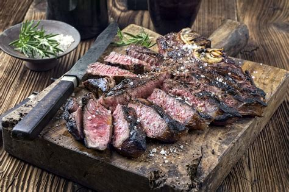
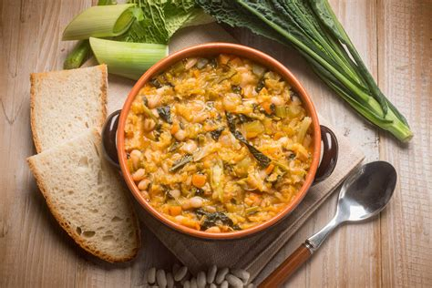
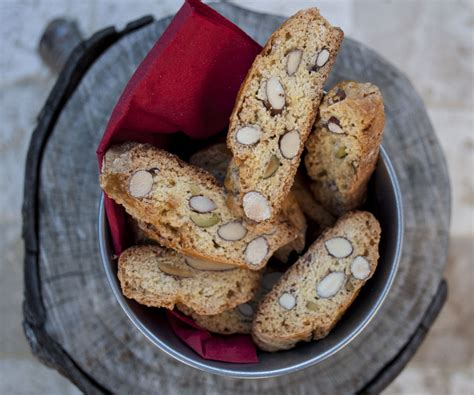
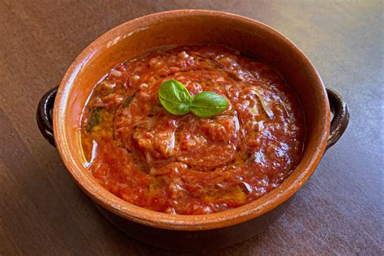
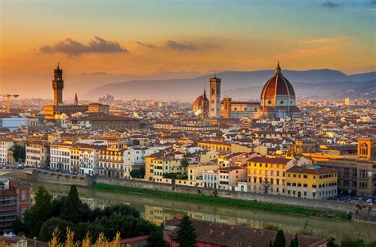
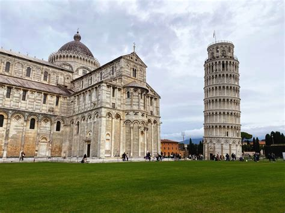
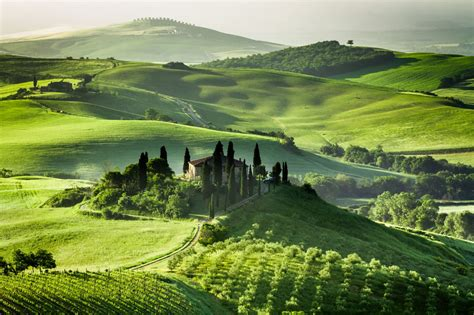
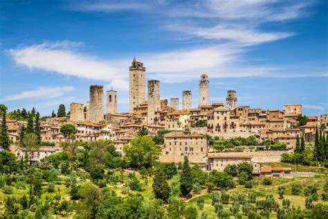
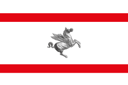

Toscana
Panoramica
La Toscana è una regione centrale d'Italia, famosa per i suoi paesaggi collinari, città d’arte, vigneti e borghi storici. Conosciuta per la sua ricca storia culturale e artistica, è la culla del Rinascimento e patria di famosi artisti come Leonardo da Vinci e Michelangelo. La regione offre una combinazione di natura, arte e cucina rinomata in tutto il mondo.
Fatti in Breve
- Capoluogo: Firenze
- Lingua Regionale/Dialetto: Italiano
- Popolazione: ~3,7 milioni
- Famosa per: Arte rinascimentale, vini Chianti, paesaggi collinari
- Curiosità: La Toscana ospita oltre 120 musei, più di qualsiasi altra regione italiana!
Piatti Tipici
Bistecca alla Fiorentina

Ribollita

Cantucci e Vin Santo

Pappa al Pomodoro

Luoghi Famosi
Firenze

Pisa

Siena

Val d’Orcia

San Gimignano

Periodo Migliore per Visitare
Il periodo migliore per visitare la Toscana è la primavera (aprile-giugno) e l'autunno (settembre-ottobre), quando il clima è mite e piacevole, ideale per esplorare città e paesaggi naturali. L'estate è calda e affollata, mentre l'inverno può essere freddo, ma meno turistico.
Simboli Regionali
- Bandiere: 
- Stemma: